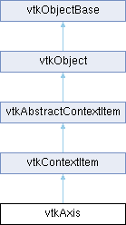

|
Etrek
|
|
Etrek
|
takes care of drawing 2D axes More...
#include <vtkAxis.h>

Public Types | |
| enum | Location { LEFT = 0 , BOTTOM , RIGHT , TOP , PARALLEL } |
| enum | { TICK_SIMPLE = 0 , TICK_WILKINSON_EXTENDED } |
| enum | { STANDARD_NOTATION = 0 , SCIENTIFIC_NOTATION , FIXED_NOTATION , PRINTF_NOTATION } |
| enum | { AUTO = 0 , FIXED , CUSTOM } |
Public Member Functions | |
| vtkTypeMacro (vtkAxis, vtkContextItem) | |
| void | PrintSelf (ostream &os, vtkIndent indent) override |
| virtual void | SetNumberOfTicks (int numberOfTicks) |
| virtual void | SetMinimum (double minimum) |
| virtual void | SetMaximum (double maximum) |
| virtual void | SetUnscaledMinimum (double minimum) |
| virtual void | SetUnscaledMaximum (double maximum) |
| virtual void | SetMinimumLimit (double lowest) |
| virtual void | SetMaximumLimit (double highest) |
| virtual void | SetUnscaledMinimumLimit (double lowest) |
| virtual void | SetUnscaledMaximumLimit (double highest) |
| void | Update () override |
| bool | Paint (vtkContext2D *painter) override |
| virtual void | AutoScale () |
| virtual void | RecalculateTickSpacing () |
| virtual vtkDoubleArray * | GetTickPositions () |
| virtual vtkFloatArray * | GetTickScenePositions () |
| virtual vtkStringArray * | GetTickLabels () |
| virtual bool | SetCustomTickPositions (vtkDoubleArray *positions, vtkStringArray *labels=nullptr) |
| vtkRectf | GetBoundingRect (vtkContext2D *painter) |
| virtual vtkStdString | GenerateSimpleLabel (double val) |
| bool | Hit (const vtkContextMouseEvent &mouse) override |
| virtual void | SetPosition (int position) |
| vtkGetMacro (Position, int) | |
| void | SetPoint1 (const vtkVector2f &pos) |
| void | SetPoint1 (float x, float y) |
| vtkGetVector2Macro (Point1, float) | |
| vtkVector2f | GetPosition1 () |
| void | SetPoint2 (const vtkVector2f &pos) |
| void | SetPoint2 (float x, float y) |
| vtkGetVector2Macro (Point2, float) | |
| vtkVector2f | GetPosition2 () |
| vtkGetMacro (NumberOfTicks, int) | |
| vtkSetMacro (TickLength, float) | |
| vtkGetMacro (TickLength, float) | |
| vtkGetObjectMacro (LabelProperties, vtkTextProperty) | |
| vtkGetMacro (Minimum, double) | |
| vtkGetMacro (Maximum, double) | |
| vtkGetMacro (UnscaledMinimum, double) | |
| vtkGetMacro (UnscaledMaximum, double) | |
| virtual void | SetRange (double minimum, double maximum) |
| virtual void | SetRange (double range[2]) |
| virtual void | SetUnscaledRange (double minimum, double maximum) |
| virtual void | SetUnscaledRange (double range[2]) |
| virtual void | GetRange (double *range) |
| virtual void | GetUnscaledRange (double *range) |
| vtkGetMacro (MinimumLimit, double) | |
| vtkGetMacro (MaximumLimit, double) | |
| vtkGetMacro (UnscaledMinimumLimit, double) | |
| vtkGetMacro (UnscaledMaximumLimit, double) | |
| vtkGetVector2Macro (Margins, int) | |
| vtkSetVector2Macro (Margins, int) | |
| virtual void | SetTitle (const vtkStdString &title) |
| virtual vtkStdString | GetTitle () |
| vtkGetObjectMacro (TitleProperties, vtkTextProperty) | |
| vtkGetMacro (LogScaleActive, bool) | |
| vtkGetMacro (LogScale, bool) | |
| virtual void | SetLogScale (bool logScale) |
| vtkBooleanMacro (LogScale, bool) | |
| vtkSetMacro (GridVisible, bool) | |
| vtkGetMacro (GridVisible, bool) | |
| vtkSetMacro (LabelsVisible, bool) | |
| vtkGetMacro (LabelsVisible, bool) | |
| vtkSetMacro (RangeLabelsVisible, bool) | |
| vtkGetMacro (RangeLabelsVisible, bool) | |
| vtkSetMacro (LabelOffset, float) | |
| vtkGetMacro (LabelOffset, float) | |
| vtkSetMacro (TicksVisible, bool) | |
| vtkGetMacro (TicksVisible, bool) | |
| vtkSetMacro (AxisVisible, bool) | |
| vtkGetMacro (AxisVisible, bool) | |
| vtkSetMacro (TitleVisible, bool) | |
| vtkGetMacro (TitleVisible, bool) | |
| virtual void | SetPrecision (int precision) |
| vtkGetMacro (Precision, int) | |
| virtual void | SetLabelFormat (const std::string &fmt) |
| vtkGetMacro (LabelFormat, std::string) | |
| vtkSetMacro (RangeLabelFormat, std::string) | |
| vtkGetMacro (RangeLabelFormat, std::string) | |
| virtual void | SetNotation (int notation) |
| vtkGetMacro (Notation, int) | |
| vtkSetMacro (Behavior, int) | |
| vtkGetMacro (Behavior, int) | |
| vtkSetSmartPointerMacro (Pen, vtkPen) | |
| vtkGetObjectMacro (Pen, vtkPen) | |
| vtkSetSmartPointerMacro (GridPen, vtkPen) | |
| vtkGetObjectMacro (GridPen, vtkPen) | |
| vtkSetMacro (TickLabelAlgorithm, int) | |
| vtkGetMacro (TickLabelAlgorithm, int) | |
| vtkSetMacro (ScalingFactor, double) | |
| vtkGetMacro (ScalingFactor, double) | |
| vtkSetMacro (Shift, double) | |
| vtkGetMacro (Shift, double) | |
| Public Member Functions inherited from vtkContextItem | |
| vtkTypeMacro (vtkContextItem, vtkAbstractContextItem) | |
| void | PrintSelf (ostream &os, vtkIndent indent) override |
| virtual void | SetTransform (vtkContextTransform *) |
| vtkGetMacro (Opacity, double) | |
| vtkSetMacro (Opacity, double) | |
| Public Member Functions inherited from vtkAbstractContextItem | |
| vtkTypeMacro (vtkAbstractContextItem, vtkObject) | |
| virtual bool | PaintChildren (vtkContext2D *painter) |
| virtual void | ReleaseGraphicsResources () |
| vtkIdType | AddItem (vtkAbstractContextItem *item) |
| bool | RemoveItem (vtkAbstractContextItem *item) |
| bool | RemoveItem (vtkIdType index) |
| vtkAbstractContextItem * | GetItem (vtkIdType index) |
| vtkIdType | GetItemIndex (vtkAbstractContextItem *item) |
| vtkIdType | GetNumberOfItems () VTK_FUTURE_CONST |
| void | ClearItems () |
| vtkIdType | Raise (vtkIdType index) |
| virtual vtkIdType | StackAbove (vtkIdType index, vtkIdType under) |
| vtkIdType | Lower (vtkIdType index) |
| virtual vtkIdType | StackUnder (vtkIdType child, vtkIdType above) |
| virtual vtkAbstractContextItem * | GetPickedItem (const vtkContextMouseEvent &mouse) |
| virtual bool | MouseEnterEvent (const vtkContextMouseEvent &mouse) |
| virtual bool | MouseMoveEvent (const vtkContextMouseEvent &mouse) |
| virtual bool | MouseLeaveEvent (const vtkContextMouseEvent &mouse) |
| virtual bool | MouseButtonPressEvent (const vtkContextMouseEvent &mouse) |
| virtual bool | MouseButtonReleaseEvent (const vtkContextMouseEvent &mouse) |
| virtual bool | MouseDoubleClickEvent (const vtkContextMouseEvent &mouse) |
| virtual bool | MouseWheelEvent (const vtkContextMouseEvent &mouse, int delta) |
| virtual bool | KeyPressEvent (const vtkContextKeyEvent &key) |
| virtual bool | KeyReleaseEvent (const vtkContextKeyEvent &key) |
| virtual void | SetScene (vtkContextScene *scene) |
| vtkContextScene * | GetScene () |
| virtual void | SetParent (vtkAbstractContextItem *parent) |
| vtkAbstractContextItem * | GetParent () |
| virtual vtkVector2f | MapToParent (const vtkVector2f &point) |
| virtual vtkVector2f | MapFromParent (const vtkVector2f &point) |
| virtual vtkVector2f | MapToScene (const vtkVector2f &point) |
| virtual vtkVector2f | MapFromScene (const vtkVector2f &point) |
| virtual bool | GetVisible () |
| vtkSetMacro (Visible, bool) | |
| vtkGetMacro (Interactive, bool) | |
| vtkSetMacro (Interactive, bool) | |
| Public Member Functions inherited from vtkObject | |
| vtkBaseTypeMacro (vtkObject, vtkObjectBase) | |
| virtual void | DebugOn () |
| virtual void | DebugOff () |
| bool | GetDebug () |
| void | SetDebug (bool debugFlag) |
| virtual void | Modified () |
| virtual vtkMTimeType | GetMTime () |
| void | PrintSelf (ostream &os, vtkIndent indent) override |
| void | RemoveObserver (unsigned long tag) |
| void | RemoveObservers (unsigned long event) |
| void | RemoveObservers (const char *event) |
| void | RemoveAllObservers () |
| vtkTypeBool | HasObserver (unsigned long event) |
| vtkTypeBool | HasObserver (const char *event) |
| vtkTypeBool | InvokeEvent (unsigned long event) |
| vtkTypeBool | InvokeEvent (const char *event) |
| std::string | GetObjectDescription () const override |
| unsigned long | AddObserver (unsigned long event, vtkCommand *, float priority=0.0f) |
| unsigned long | AddObserver (const char *event, vtkCommand *, float priority=0.0f) |
| vtkCommand * | GetCommand (unsigned long tag) |
| void | RemoveObserver (vtkCommand *) |
| void | RemoveObservers (unsigned long event, vtkCommand *) |
| void | RemoveObservers (const char *event, vtkCommand *) |
| vtkTypeBool | HasObserver (unsigned long event, vtkCommand *) |
| vtkTypeBool | HasObserver (const char *event, vtkCommand *) |
| template<class U, class T> | |
| unsigned long | AddObserver (unsigned long event, U observer, void(T::*callback)(), float priority=0.0f) |
| template<class U, class T> | |
| unsigned long | AddObserver (unsigned long event, U observer, void(T::*callback)(vtkObject *, unsigned long, void *), float priority=0.0f) |
| template<class U, class T> | |
| unsigned long | AddObserver (unsigned long event, U observer, bool(T::*callback)(vtkObject *, unsigned long, void *), float priority=0.0f) |
| vtkTypeBool | InvokeEvent (unsigned long event, void *callData) |
| vtkTypeBool | InvokeEvent (const char *event, void *callData) |
| virtual void | SetObjectName (const std::string &objectName) |
| virtual std::string | GetObjectName () const |
| Public Member Functions inherited from vtkObjectBase | |
| const char * | GetClassName () const |
| virtual vtkTypeBool | IsA (const char *name) |
| virtual vtkIdType | GetNumberOfGenerationsFromBase (const char *name) |
| virtual void | Delete () |
| virtual void | FastDelete () |
| void | InitializeObjectBase () |
| void | Print (ostream &os) |
| void | Register (vtkObjectBase *o) |
| virtual void | UnRegister (vtkObjectBase *o) |
| int | GetReferenceCount () |
| void | SetReferenceCount (int) |
| bool | GetIsInMemkind () const |
| virtual void | PrintHeader (ostream &os, vtkIndent indent) |
| virtual void | PrintTrailer (ostream &os, vtkIndent indent) |
| virtual bool | UsesGarbageCollector () const |
Static Public Member Functions | |
| static vtkAxis * | New () |
| static double | NiceNumber (double number, bool roundUp) |
| static double | NiceMinMax (double &min, double &max, float pixelRange, float tickPixelSpacing) |
| Static Public Member Functions inherited from vtkObject | |
| static vtkObject * | New () |
| static void | BreakOnError () |
| static void | SetGlobalWarningDisplay (vtkTypeBool val) |
| static void | GlobalWarningDisplayOn () |
| static void | GlobalWarningDisplayOff () |
| static vtkTypeBool | GetGlobalWarningDisplay () |
| Static Public Member Functions inherited from vtkObjectBase | |
| static vtkTypeBool | IsTypeOf (const char *name) |
| static vtkIdType | GetNumberOfGenerationsFromBaseType (const char *name) |
| static vtkObjectBase * | New () |
| static void | SetMemkindDirectory (const char *directoryname) |
| static bool | GetUsingMemkind () |
Protected Member Functions | |
| void | UpdateLogScaleActive (bool updateMinMaxFromUnscaled) |
| virtual void | GenerateTickLabels (double min, double max) |
| virtual void | GenerateTickLabels () |
| virtual void | GenerateLabelFormat (int notation, double n) |
| virtual vtkStdString | GenerateSprintfLabel (double value, const std::string &format) |
| double | CalculateNiceMinMax (double &min, double &max) |
| double | LogScaleTickMark (double number, bool roundUp, bool &niceValue, int &order) |
| virtual void | GenerateLogSpacedLinearTicks (int order, double min, double max) |
| void | GenerateLogScaleTickMarks (int order, double min=1.0, double max=9.0, bool detailLabels=true) |
| void | CalculateTitlePosition (vtkVector2f &out) |
| Protected Member Functions inherited from vtkAbstractContextItem | |
| virtual void | ReleaseGraphicsCache () |
| Protected Member Functions inherited from vtkObject | |
| void | RegisterInternal (vtkObjectBase *, vtkTypeBool check) override |
| void | UnRegisterInternal (vtkObjectBase *, vtkTypeBool check) override |
| void | InternalGrabFocus (vtkCommand *mouseEvents, vtkCommand *keypressEvents=nullptr) |
| void | InternalReleaseFocus () |
| Protected Member Functions inherited from vtkObjectBase | |
| virtual void | ReportReferences (vtkGarbageCollector *) |
| vtkObjectBase (const vtkObjectBase &) | |
| void | operator= (const vtkObjectBase &) |
Protected Attributes | |
| int | Position |
| float * | Point1 |
| float * | Point2 |
| vtkVector2f | Position1 |
| vtkVector2f | Position2 |
| double | TickInterval |
| int | NumberOfTicks |
| float | TickLength |
| vtkTextProperty * | LabelProperties |
| double | Minimum |
| double | Maximum |
| double | MinimumLimit |
| double | MaximumLimit |
| double | UnscaledMinimum |
| double | UnscaledMaximum |
| double | UnscaledMinimumLimit |
| double | UnscaledMaximumLimit |
| double | NonLogUnscaledMinLimit |
| double | NonLogUnscaledMaxLimit |
| int | Margins [2] |
| vtkStdString | Title |
| vtkTextProperty * | TitleProperties |
| bool | LogScale |
| bool | LogScaleActive |
| bool | GridVisible |
| bool | LabelsVisible |
| bool | RangeLabelsVisible |
| float | LabelOffset |
| bool | TicksVisible |
| bool | AxisVisible |
| bool | TitleVisible |
| int | Precision |
| int | Notation |
| std::string | LabelFormat |
| std::string | RangeLabelFormat |
| int | Behavior |
| float | MaxLabel [2] |
| bool | TitleAppended |
| bool | CustomTickLabels |
| vtkSmartPointer< vtkPen > | Pen |
| vtkSmartPointer< vtkPen > | GridPen |
| vtkSmartPointer< vtkDoubleArray > | TickPositions |
| vtkSmartPointer< vtkFloatArray > | TickScenePositions |
| vtkSmartPointer< vtkStringArray > | TickLabels |
| bool | UsingNiceMinMax |
| bool | TickMarksDirty |
| bool | Resized |
| int | TickLabelAlgorithm |
| vtkTimeStamp | BuildTime |
| double | ScalingFactor |
| double | Shift |
| Protected Attributes inherited from vtkContextItem | |
| double | Opacity = 1.0 |
| vtkContextTransform * | Transform = nullptr |
| Protected Attributes inherited from vtkAbstractContextItem | |
| vtkContextScene * | Scene |
| vtkAbstractContextItem * | Parent |
| vtkContextScenePrivate * | Children |
| bool | Visible |
| bool | Interactive |
| Protected Attributes inherited from vtkObject | |
| bool | Debug |
| vtkTimeStamp | MTime |
| vtkSubjectHelper * | SubjectHelper |
| std::string | ObjectName |
| Protected Attributes inherited from vtkObjectBase | |
| std::atomic< int32_t > | ReferenceCount |
| vtkWeakPointerBase ** | WeakPointers |
Additional Inherited Members | |
| Static Protected Member Functions inherited from vtkObjectBase | |
| static vtkMallocingFunction | GetCurrentMallocFunction () |
| static vtkReallocingFunction | GetCurrentReallocFunction () |
| static vtkFreeingFunction | GetCurrentFreeFunction () |
| static vtkFreeingFunction | GetAlternateFreeFunction () |
takes care of drawing 2D axes
The vtkAxis is drawn in screen coordinates. It is usually one of the last elements of a chart to be drawn. It renders the axis label, tick marks and tick labels. The tick marks and labels span the range of values between Minimum and Maximum. The Minimum and Maximum values are not allowed to extend beyond the MinimumLimit and MaximumLimit values, respectively.
Note that many other chart elements (e.g., vtkPlotPoints) refer to vtkAxis instances to determine how to scale raw data for presentation. In particular, care must be taken with logarithmic scaling. The axis Minimum, Maximum, and Limit values are stored both unscaled and scaled (with log(x) applied when GetLogScaleActive() returns true). User interfaces will most likely present the unscaled values as they represent the values provided by the user. Other chart elements may need the scaled values in order to draw in the same coordinate system.
Just because LogScale is set to true does not guarantee that the axis will use logarithmic scaling – the Minimum and Maximum values for the axis must both lie to the same side of origin (and not include the origin). Also, this switch from linear- to log-scaling may occur during a rendering pass if autoscaling is enabled. Because the log and pow functions are not invertible and the axis itself decides when to switch between them without offering any external class managing the axis a chance to save the old values, it saves old Limit values in NonLogUnscaled{Min,Max}Limit so that behavior is consistent when LogScale is changed from false to true and back again.
| anonymous enum |
Enumeration of the axis behaviors.
| anonymous enum |
Enumeration of the axis notations available.
| enum vtkAxis::Location |
Enumeration of the axis locations in a conventional XY chart. Other layouts are possible.
|
virtual |
Use this function to autoscale the axes after setting the minimum and maximum values. This will cause the axes to select the nicest numbers that enclose the minimum and maximum values, and to select an appropriate number of tick marks.
|
protected |
Calculate the next "nicest" numbers above and below the current minimum.
|
protected |
Calculate the position where the title of the axis would be drawn.
|
protected |
Generate tick marks for logarithmic scale for specific order of magnitude. Mark generation is limited by parameters min and max. Tick marks will be: ... 0.1 0.2 .. 0.9 1 2 .. 9 10 20 .. 90 100 ... Tick labels will be: ... 0.1 0.2 0.5 1 2 5 10 20 50 100 ... If Parameter detaillabels is disabled tick labels will be: ... 0.1 1 10 100 ... If min/max is not in between 1.0 and 9.0 defaults will be used. If min and max do not differ 1 defaults will be used.
|
protectedvirtual |
Generate logarithmically-spaced tick marks with linear-style labels.
This is for the case when log scaling is active, but the axis min and max span less than an order of magnitude. In this case, the most significant digit that varies is identified and ticks generated for each value that digit may take on. If that results in only 2 tick marks, the next-most-significant digit is varied. If more than 20 tick marks would result, the stride for the varying digit is increased.
|
virtual |
Generate a single label using the current settings when TickLabelAlgorithm is TICK_SIMPLE.
|
protectedvirtual |
Generate label using a printf-style format string.
|
protectedvirtual |
Generate tick labels from the supplied double array of tick positions.
|
protectedvirtual |
Calculate and assign nice labels/logical label positions.
| vtkRectf vtkAxis::GetBoundingRect | ( | vtkContext2D * | painter | ) |
|
virtual |
Get the logical range of the axis, in plot coordinates.
The unscaled range will always be in the same coordinate system of the data being plotted, regardless of whether LogScale is true or false. Calling GetRange() when LogScale is true will return the log10({min, max}).
|
virtual |
A string array containing the tick labels for the axis.
|
virtual |
An array with the positions of the tick marks along the axis line. The positions are specified in the plot coordinates of the axis.
|
virtual |
An array with the positions of the tick marks along the axis line. The positions are specified in scene coordinates.
|
overridevirtual |
Return true if the supplied x, y coordinate is inside the item.
Reimplemented from vtkAbstractContextItem.
|
protected |
Return a tick mark for a logarithmic axis. If roundUp is true then the upper tick mark is returned. Otherwise the lower tick mark is returned. Tick marks will be: ... 0.1 0.2 .. 0.9 1 2 .. 9 10 20 .. 90 100 ... Parameter nicevalue will be set to true if tick mark is in: ... 0.1 0.2 0.5 1 2 5 10 20 50 100 ... Parameter order is set to the detected order of magnitude of the number.
|
static |
Creates a 2D Chart object.
|
static |
Static function to calculate "nice" minimum, maximum, and tick spacing values.
|
static |
Return a "nice number", often defined as 1, 2 or 5. If roundUp is true then the nice number will be rounded up, false it is rounded down. The supplied number should be between 0.0 and 9.9.
|
overridevirtual |
Paint event for the axis, called whenever the axis needs to be drawn.
Reimplemented from vtkAbstractContextItem.
|
overridevirtual |
Methods invoked by print to print information about the object including superclasses. Typically not called by the user (use Print() instead) but used in the hierarchical print process to combine the output of several classes.
Reimplemented from vtkAbstractContextItem.
|
virtual |
Recalculate the spacing of the tick marks - typically useful to do after scaling the axis.
|
virtual |
Set the tick positions, and optionally custom tick labels. If the labels and positions are null then automatic tick labels will be assigned. If only positions are supplied then appropriate labels will be generated according to the axis settings. If positions and labels are supplied they must be of the same length. Returns true on success, false on failure.
|
virtual |
Get/Set the printf-style format string used when TickLabelAlgorithm is TICK_SIMPLE and Notation is PRINTF_NOTATION. The default is "%g".
|
virtual |
Set the logical maximum value of the axis, in plot coordinates. If LogScaleActive is true (not just LogScale), then this sets the maximum base-10 exponent.
|
virtual |
Set the logical highest possible value for Maximum, in plot coordinates.
|
virtual |
Set the logical minimum value of the axis, in plot coordinates. If LogScaleActive is true (not just LogScale), then this sets the minimum base-10 exponent.
|
virtual |
Set the logical lowest possible value for Minimum, in plot coordinates.
|
virtual |
Get/set the numerical notation, standard, scientific, fixed, or a printf-style format string.
|
virtual |
Set the number of tick marks for this axis. Default is -1, which leads to automatic calculation of nicely spaced tick marks.
| void vtkAxis::SetPoint1 | ( | const vtkVector2f & | pos | ) |
Set point 1 of the axis (in pixels), this is usually the origin.
| void vtkAxis::SetPoint2 | ( | const vtkVector2f & | pos | ) |
Set point 2 of the axis (in pixels), this is usually the terminus.
|
virtual |
Get/set the position of the axis (LEFT, BOTTOM, RIGHT, TOP, PARALLEL).
|
virtual |
Get/set the numerical precision to use, default is 2. This is ignored when Notation is STANDARD_NOTATION or PRINTF_NOTATION.
|
virtual |
Set the logical range of the axis, in plot coordinates.
The unscaled range will always be in the same coordinate system of the data being plotted, regardless of whether LogScale is true or false. When calling SetRange() and LogScale is true, the range must be specified in logarithmic coordinates. Using SetUnscaledRange(), you may ignore the value of LogScale.
|
virtual |
Get/set the title text of the axis.
|
virtual |
Set the logical maximum value of the axis, in plot coordinates.
|
virtual |
Set the logical highest possible value for Maximum, in plot coordinates.
|
virtual |
Set the logical, unscaled minimum value of the axis, in plot coordinates. Use this instead of SetMinimum() if you wish to provide the actual minimum instead of log10(the minimum) as part of the axis scale.
|
virtual |
Set the logical lowest possible value for Minimum, in plot coordinates.
|
overridevirtual |
Update the geometry of the axis. Takes care of setting up the tick mark locations etc. Should be called by the scene before rendering.
Reimplemented from vtkAbstractContextItem.
|
protected |
Update whether log scaling will be used for layout and rendering.
Log scaling is only active when LogScale is true and the closed, unscaled range does not contain the origin. The boolean parameter determines whether the minimum and maximum values are set from their unscaled counterparts.
| vtkAxis::vtkGetMacro | ( | LogScale | , |
| bool | ) |
Get/set whether the axis should attempt to use a log scale.
The default is false.
| vtkAxis::vtkGetMacro | ( | LogScaleActive | , |
| bool | ) |
Get whether the axis is using a log scale. This will always be false when LogScale is false. It is only true when LogScale is true and the UnscaledRange does not cross or include the origin (zero).
The limits (MinimumLimit, MaximumLimit, and their unscaled counterparts) do not prevent LogScaleActive from becoming true; they are adjusted if they cross or include the origin and the original limits are preserved for when LogScaleActive becomes false again.
| vtkAxis::vtkGetMacro | ( | Maximum | , |
| double | ) |
Get the logical maximum value of the axis, in plot coordinates. If LogScaleActive is true (not just LogScale), then this returns the maximum base-10 exponent.
| vtkAxis::vtkGetMacro | ( | MaximumLimit | , |
| double | ) |
Get the logical highest possible value for Maximum, in plot coordinates.
| vtkAxis::vtkGetMacro | ( | Minimum | , |
| double | ) |
Get the logical minimum value of the axis, in plot coordinates. If LogScaleActive is true (not just LogScale), then this returns the minimum base-10 exponent.
| vtkAxis::vtkGetMacro | ( | MinimumLimit | , |
| double | ) |
Get the logical lowest possible value for Minimum, in plot coordinates.
| vtkAxis::vtkGetMacro | ( | NumberOfTicks | , |
| int | ) |
Get the number of tick marks for this axis.
| vtkAxis::vtkGetMacro | ( | UnscaledMaximum | , |
| double | ) |
Get the logical maximum value of the axis, in plot coordinates.
| vtkAxis::vtkGetMacro | ( | UnscaledMaximumLimit | , |
| double | ) |
Get the logical highest possible value for Maximum, in plot coordinates.
| vtkAxis::vtkGetMacro | ( | UnscaledMinimum | , |
| double | ) |
Get the logical minimum value of the axis, in plot coordinates.
| vtkAxis::vtkGetMacro | ( | UnscaledMinimumLimit | , |
| double | ) |
Get the logical lowest possible value for Minimum, in plot coordinates.
| vtkAxis::vtkGetObjectMacro | ( | LabelProperties | , |
| vtkTextProperty | ) |
Get the vtkTextProperty that governs how the axis labels are displayed. Note that the alignment properties are not used.
| vtkAxis::vtkGetObjectMacro | ( | TitleProperties | , |
| vtkTextProperty | ) |
Get the vtkTextProperty that governs how the axis title is displayed.
| vtkAxis::vtkGetVector2Macro | ( | Margins | , |
| int | ) |
Get the margins of the axis, in pixels.
| vtkAxis::vtkGetVector2Macro | ( | Point1 | , |
| float | ) |
Get point 1 of the axis (in pixels), this is usually the origin.
| vtkAxis::vtkGetVector2Macro | ( | Point2 | , |
| float | ) |
Get point 2 of the axis (in pixels), this is usually the terminus.
| vtkAxis::vtkSetMacro | ( | AxisVisible | , |
| bool | ) |
Get/set whether the axis line should be visible.
| vtkAxis::vtkSetMacro | ( | Behavior | , |
| int | ) |
Get/set the behavior of the axis (auto or fixed). The default is 0 (auto).
| vtkAxis::vtkSetMacro | ( | GridVisible | , |
| bool | ) |
Get/set whether the axis grid lines should be drawn, default is true.
| vtkAxis::vtkSetMacro | ( | LabelOffset | , |
| float | ) |
Get/set the offset (in pixels) of the label text position from the axis
| vtkAxis::vtkSetMacro | ( | LabelsVisible | , |
| bool | ) |
Get/set whether the axis labels should be visible.
| vtkAxis::vtkSetMacro | ( | RangeLabelFormat | , |
| std::string | ) |
Get/Set the printf-style format string used for range labels. This format is always used regardless of TickLabelAlgorithm and Notation. Default is "%g".
| vtkAxis::vtkSetMacro | ( | RangeLabelsVisible | , |
| bool | ) |
Get/set whether the labels for the range should be visible.
| vtkAxis::vtkSetMacro | ( | ScalingFactor | , |
| double | ) |
Get/set the scaling factor used for the axis, this defaults to 1.0 (no scaling), and is used to coordinate scaling with the plots, charts, etc.
| vtkAxis::vtkSetMacro | ( | TickLabelAlgorithm | , |
| int | ) |
Get/set the tick label algorithm that is used to calculate the min, max and tick spacing. There are currently two algorithms, vtkAxis::TICK_SIMPLE is the default and uses a simple algorithm. The second option is vtkAxis::TICK_WILKINSON which uses an extended Wilkinson algorithm to find the optimal range, spacing and font parameters.
| vtkAxis::vtkSetMacro | ( | TickLength | , |
| float | ) |
Get/set the length of tick marks (in pixels).
| vtkAxis::vtkSetMacro | ( | TicksVisible | , |
| bool | ) |
Get/set whether the tick marks should be visible.
| vtkAxis::vtkSetMacro | ( | TitleVisible | , |
| bool | ) |
Get/set whether the axis title should be visible.
Set/get the vtkPen object that controls the way this axis is drawn.
Set/get the vtkPen object that controls the way this axis is drawn.
| vtkAxis::vtkSetVector2Macro | ( | Margins | , |
| int | ) |
Set the margins of the axis, in pixels.
|
protected |
The point cache is marked dirty until it has been initialized.
|
protected |
Are we using custom tick labels, or should the axis generate them?
|
protected |
This object stores the vtkPen that controls how the grid lines are drawn.
|
protected |
This object stores the vtkPen that controls how the axis is drawn.
|
protected |
Flag to indicate that the axis has been resized.
|
protected |
Scaling factor used on this axis, this is used to accurately render very small/large numbers accurately by converting the underlying range by the scaling factor.
|
protected |
The algorithm being used to tick label placement.
|
protected |
The labels for the tick marks
|
protected |
Mark the tick labels as dirty when the min/max value is changed.
|
protected |
Position of tick marks in screen coordinates
|
protected |
Position of tick marks in screen coordinates
|
protected |
Hint as to whether a nice min/max was set, otherwise labels may not be present at the top/bottom of the axis.